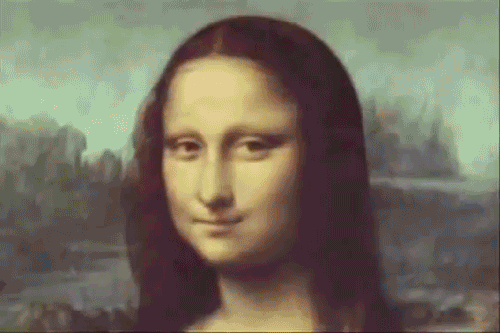

Hello there! Welcome to my website!
My name is Jennifer Nunez and I am currently an undergraduate student at San Jose State University.
I have been given the opportunity to work with a variety of traditional and nontraditional mediums. My work tends to focus on social issues such as: obesity, pollution, crime, isolation/depression, etc.
I also enjoy fabricating loose abstracted portraits, landscapes, and still lives on wooden panels with oil paint. However, I am not limited to just painting as I enjoy working with photography, digital media, and other mediums as well; I am also skilled in creating three-dimensional sculptures.
The projects listed below were done in my Introduction to Digital Media class. You may click to look through each.
